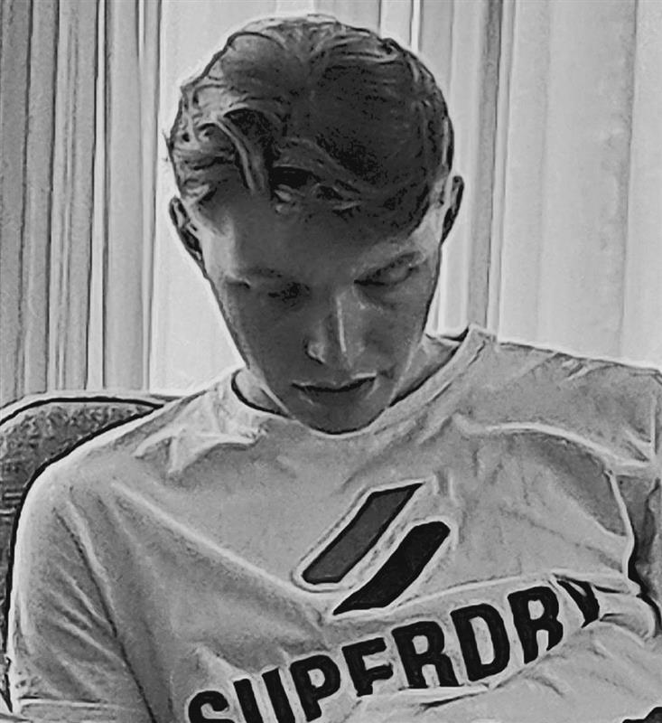

Bello, ik benTwan 23 jaar en een 2de jaars CMD student van de universiteit van Amsterdam maar dat wist je waarschijnlijk al. Ik ben een relaxte en/of grappige gast. "panik"🚫 "Rustig en beheerst"✅ Leren is een aangeboren talent dat altijd deel uitmaakt van je. Daarom wil ik hier mijn projecten laten zien/delen met natuurlijk mijn eigen twist eraan.
Heb plezier in wat je wil gaan doen of al doet. Druf vragen te stellen aan andere want dit helpt jouw weer om door te groeien. Mijn slogan/ motto is dan ook "Soms win je, soms leer je"
Mijn LinkedIn School Email